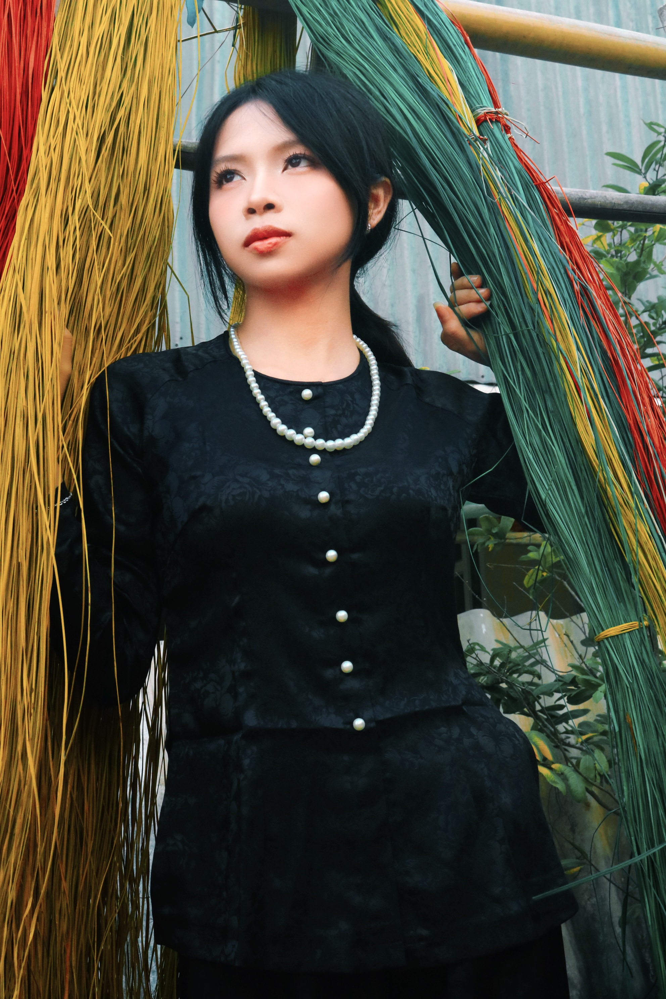
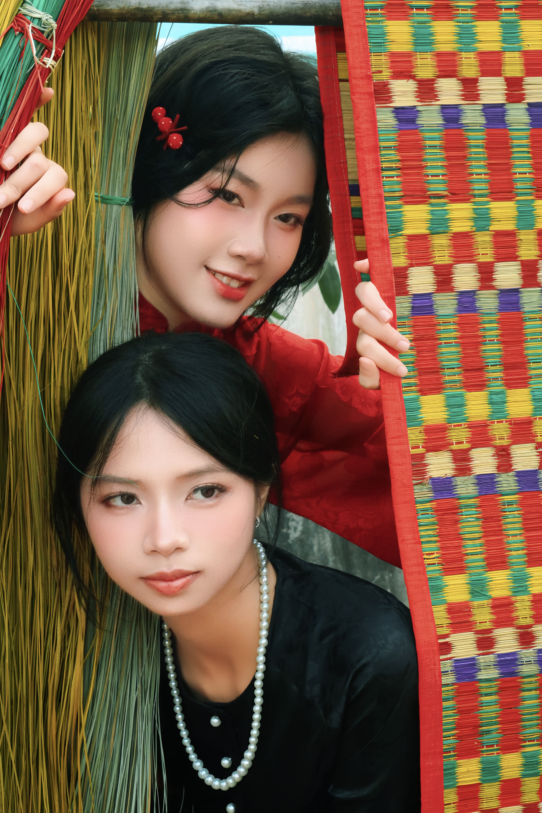
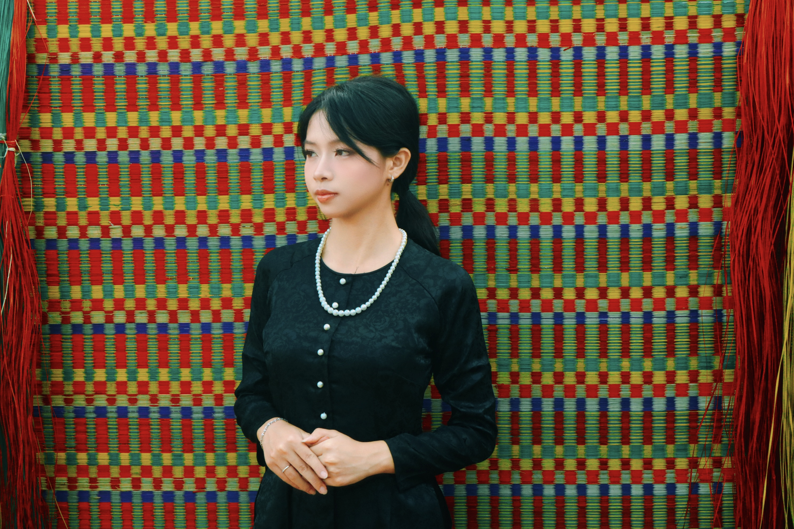

CHIẾU ĐỊNH YÊN
LÁC SẮC

Sau hàng trăm năm len lỏi vào đời sống người Việt, tấm chiếu đang dần vượt ra khỏi những giá trị thường thấy, bộc lộ tiềm năng phát triển trở thành một biểu tượng của văn hóa và nghệ thuật thẩm mĩ, trong đó nổi bật với những hoa văn đặc trưng.
Cái đẹp của tấm chiếu tồn tại dưới nhiều hình thái khác nhau: tính chi tiết của chiếu vảy ốc, sự đối xứng, sặc sỡ của chiếu lẫy, chất nguyên bản của một tấm chiếu trắng,...



Tấm chiếu được làm ra không chỉ là một món đồ gia dụng, nó là một phần đời sống được trao tay, soi chiếu ngược lại phẩm chất con người, để ta tìm thấy đâu đây một đức tính gần gũi thân quen: tỉ mẫn, chân phương, mộc mạc,...

Để tạo nên sức hút thị giác, mỗi sợi lác đều mang một màu sắc riêng, dù là xanh là đỏ, là vàng hay là trắng, chúng đều có một vai trò không thể thay thế, góp phần làm nên bức tranh tổng thể đầy sắc màu.



Với mong muốn thổi vào một hơi thở hiện đại, mới lạ hơn cho bức tranh rực rỡ ấy, nhóm sử dụng hình ảnh những cô gái cá tính khoác lên mình trang phục truyền thống trên nền hoa văn đặc trưng.

Sự hòa hợp giữa con người với tấm chiếu, không gói gọn trong phương diện đời sống, mà còn là trong tư tưởng và cái nhìn thẩm mĩ. Vạn vật thay đổi, và giá trị tấm chiếu đối với nhóm sẽ không đứng yên hay bị giới hạn bởi thiên kiến cho rằng nó cũ kĩ, lạc hậu. Ngược lại, ở thời đại này, con người càng khao khát tìm ra vẻ đẹp mà trước nay chưa từng thấy ở tấm chiếu trăm năm.


Làng chiếu Định Yên, chuyến đi đã định là sẽ để lại yêu thương thật nhiều, cuối cùng cũng đến hồi kết.
Tấm chiếu có thể không phải nhân vật chính, không phải một sự tồn tại mà đa số chúng ta để tâm, nhưng chắc chắn đã hiện diện âm thầm trong kí ức của nhiều đứa trẻ, hoặc đâu đó, là yên ả vỗ về bóng lưng mỏi mệt của nhiều người Việt Nam.
Tấm chiếu đẹp, không chỉ vì nó đẹp. Mà còn vì đã trở thành sự đồng hành bình dị đến mức thân thương.